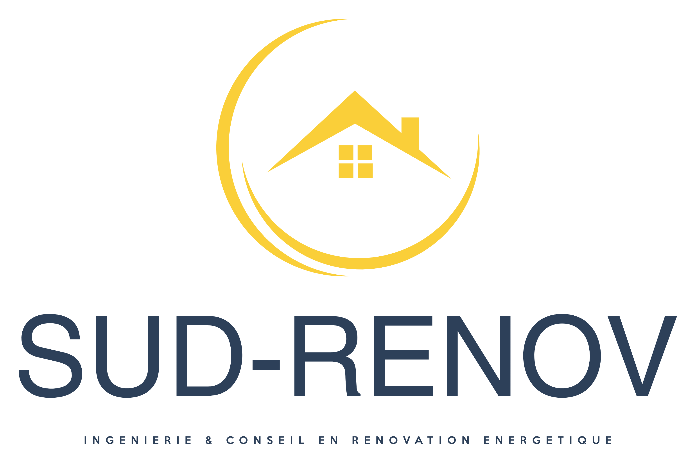

Je suis Benjamin GIMENEZ, ingénieur de formation et ancien
responsable d'un centre de travaux au sein d'un grand groupe
français, leader dans les secteurs de la construction et de
l'énergie.
Fort de plusieurs années d'expérience dans la gestion de projets
complexes et la conduite d'équipes, j'ai acquis une expertise
approfondie dans la réalisation de projets de construction et de
rénovation à grande échelle, tout en étant au cœur des enjeux
énergétiques.
Ma passion pour la rénovation énergétique et la recherche de
solutions innovantes me pousse à m'engager pleinement dans la
transition énergétique des bâtiments. Je suis particulièrement
intéressé par l'optimisation de l'efficacité énergétique, le confort
des occupants, ainsi que l'amélioration du bien-être des usagers
à travers des interventions techniques ciblées et des stratégies
adaptées à chaque projet.
SUD-RENOV découle d'une profonde volonté d'apporter des solutions sur
mesure et de qualité aux particuliers, entreprises et collectivités souhaitant améliorer leur
performance énergétique tout en préservant leur santé et leur confort de vie.
Grâce à SUD-RENOV, je mets à profit mon expertise pour accompagner mes clients dans
l'optimisation de leur habitat ou de leurs locaux, tout en intégrant une gestion rigoureuse des
risques
techniques.

Mon expertise ne se limite pas seulement à l'optimisation énergétique. Je suis également très
impliqué dans l'étude et la gestion des pathologies du bâtiment.
En effet, au-delà des enjeux de
performance énergétique, je suis particulièrement sensible aux risques liés à l'humidité, aux
moisissures, et aux fissures, qui peuvent affecter la structure du bâtiment et la santé des
occupants.
Cela fait partie intégrante de mon approche holistique de la rénovation, visant à garantir des
bâtiments sains, confortables et durables.